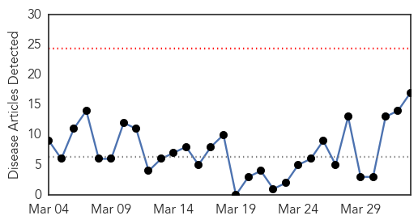
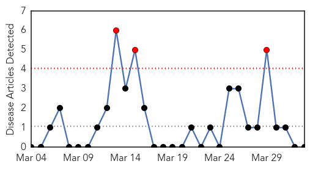

Measles
30-Day Web Trend
0 alerts, 0 warnings

30-Day Twitter Trend
0 alerts, 0 warnings

Article Locations
Article Confidences
Top Articles:
- 0.993
- Measles Outbreak Grows to 25 Cases in NYC, Spreads to Lower East Side
- 0.982
- Lone measles case confirmed in York Region
- 0.969
- Measles outbreaks prompt medical chief to issue travel warning
- 0.968
- More measles cases in NYC; health officials urge shots
- 0.963
- Measles outbreak in Hamilton came from the Philippines
- 0.962
- Vaccination deadline nears
- 0.961
- Measles Threatens in Canada, U.S.
- 0.956
- Measles Outbreak Not Restricted to California Growing Your Baby
- 0.950
- Students told to check that they’re vaccinated after measles outbreak
- 0.945
- Public health warning issued as number of measles cases continues to rise
- 0.937
- Measles still spreading in U.S. and Canada
- 0.922
- IN-DEPTH RADIO :: Ontario health officials concerned after increase in measles cases :: News
- 0.908
- Health alert issued after three more Brisbane measles cases
- 0.860
- Peel Health issues measles warning to Mississauga sportsplex visitors
- 0.821
- Are you protected from the measles? Get checked, Sudbury health unit says
- 0.570
- Measles outbreak shows importance of education
- 0.513
- 2 new Calgary measles cases confirmed
Top Tweets:
-
No tweets found for Apr 02, 2014
Hepatitis
30-Day Web Trend
3 alerts, 0 warnings

30-Day Twitter Trend
0 alerts, 0 warnings

Article Locations

Article Confidences

Top Articles:
-
No articles found for Apr 02, 2014
Top Tweets:
-
No tweets found for Apr 02, 2014